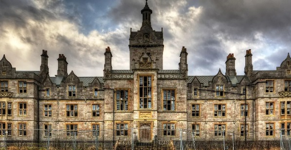
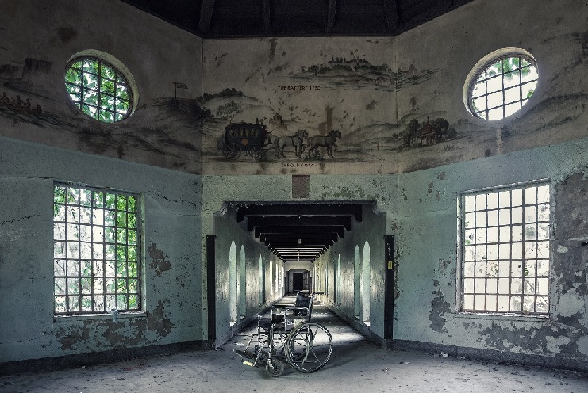

As a child, my mother was always interested in strange things. Scary movies and books...the macabre and odd. She would sit me down with her and allow me to watch the spooky movies and, later, read her books. I was never scared. I was thrilled! My favorite memories are of Friday nights, going down to the local video store, Flick Video, and perusing the horror isles. I lived for the look on all the hulking VHS covers and the intoxicating smell of the tapes that filled the store. An hour later, I was on my way home with a huge stack of horror tapes and N64 games to hole up in the dark with for the weekend. Something about popping a tape into the VCR (usually finding that I needed to rewind it) and seeing those tracking lines and the suspenseful music of whatever next terrifying film was going to blow my young mind made me so excited. I watched all the classics. Jaws, Friday the 13th, A Nightmare of Elm Street, Sleepaway Camp, The Texas Chainsaw Massacre, Slumber Party Massacre…you get the idea. Once I had worked through those, I started watching lesser-known movies, and I loved those just as much.
In my early teens and adulthood, I started collecting not only the tapes I loved but also memorabilia and merchandise from those films I coveted. I started going to conventions and meeting the heroes and villains of the movies I cared so much for. I started to want to know more about HOW these movies are made and what goes into them. Over the past 20 years, I have amassed a collection of memorabilia, autographs, and items from the horror genre and was able to turn my basement into a theater, surrounded by all of these things I love. It is singlehandedly my most prized accomplishment. My love for nostalgia doesn’t just go to these things, though. As I said, I have a love of older things. Video games are one thing for me that I love to collect as well. I grew up with the original Nintendo, Super Nintendo, N64, and PS1, but I still loved the old Atari and Sega systems. I decided to start collecting those games and systems as well… old audio and video equipment, computer items, typewriters, and records. Things that most people have thrown to the wayside over time.
Moving back to the macabre side, I like to collect old medical equipment, carnival items, books, and anything to do with old asylums or hospitals and their history. I love to explore buildings like this, seeing what was left behind from another time and feeling the energy of what happened there, which can be heartbreaking at times. I even have a sheep brain! I’m also a certified Halloween fanatic (surprise, right?). I want to hold an item in my hand and know its HISTORY. I want to learn what things were like for those that came before us. It’s fascinating to me. I can certainly understand that this may seem odd to some people, and many people don’t relate, but it’s a lifestyle for me! I simply love these things, ESPECIALLY Horror.
 